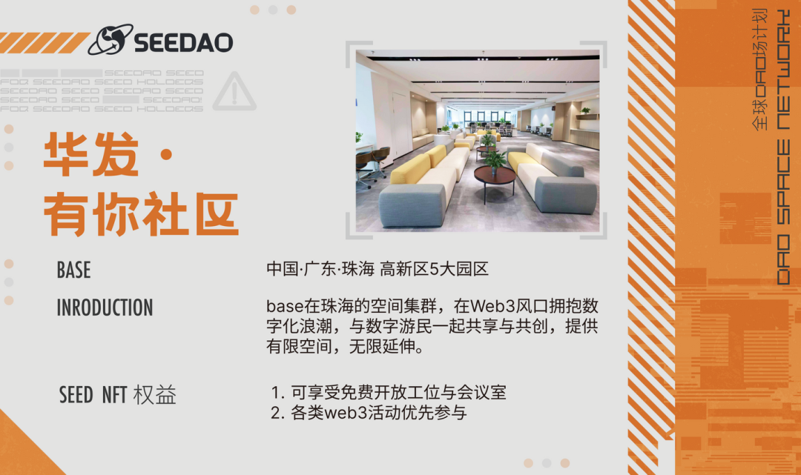
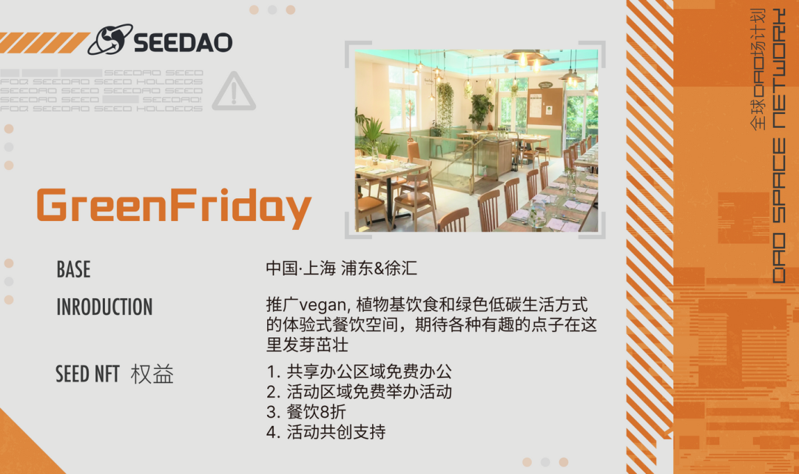
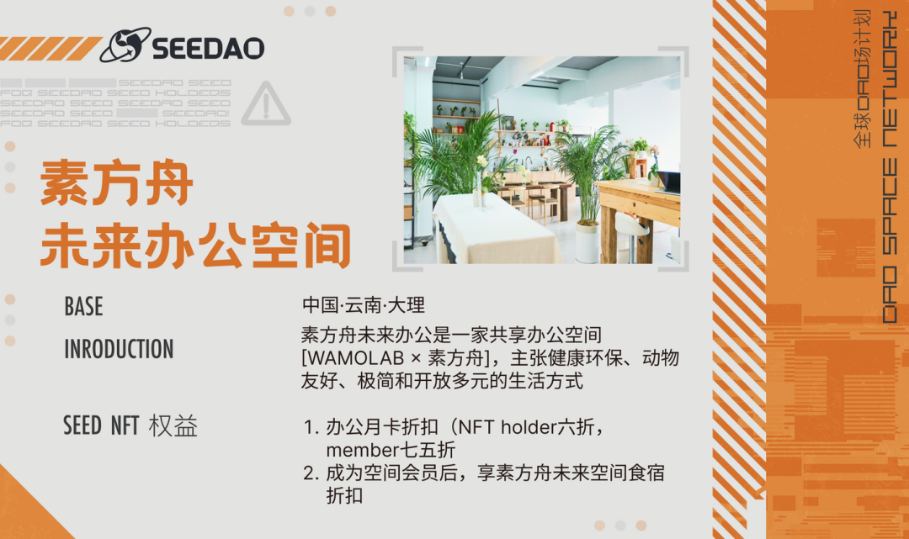

链接全球，共建城市绿洲 | 全球DAO场计划首期
作者: SeeDAO
分类:
SeeDAO, Web3, DAO, 全球DAO场计划, 全球 DAO 场计划 & See U IRL

/
撰写《瓦尔登湖》的亨利·戴维·梭罗说："我发现，人们真正的相遇发生在旷野、森林和湖泊中，因为只有在那里，他们才会完全展示自己。"I find it is the wilderness, forest, and lake where people really meet, for only there can they fully disclose themselves.
我们相信，每一个线下空间，也可以是旷野、森林和湖泊。我们想做的事情，是把这些旷野相连。「全球DAO场计划」在一个月前，启动线下共享空间招募，一同打造Builders交流的后乐园。目前第一阶段，我们已经跟十余家空间建立联系，除了前一段时间官宣的北京·MetaSpace、湖州·时空公社、大理·大理hub三家空间外，近期，我们与上海·GreenFriday、珠海·华发有你社区、杭州·觉成轩、苏州·ebike、大理的由野书店、素方舟未来办公和狂想曲咖啡馆以及墨尔本·ADOZEN ADOZEN等9家空间达成了合作。8月，所有与SeeDAO达成合作的社区会录入全球DAO场的空间名录中，同时也会收录进SeeDAO的network网站中，敬请期待。


在跟空间申请人的沟通和介绍中，我们了解到大家参与全球DAO场项目不同的目标：/上海的GreenFriday想为提供一个舒服的空间给更多有趣的伙伴一起玩耍；/ 来自大理，狂想曲咖啡馆的主理说：装修咖啡厅的初衷就是为了给数字游民提供良好的办公空间， 希望给大家提供更优质的办公环境；/ 在大理田野边的由野书店则是期待能够与不同的有趣的朋友们产生更多交流和碰撞……有的申请人提到：世界的本质就是一场大型RPG游戏 (Role-Playing Game)，希望更多不同类型、不同地域、不同背景的朋友参与到这个试验场当中，碰撞出有趣的火花。线上再热烈的讨论，但肉身仍有隔膜。相信线下的力量可以让大家感受到真实而细致的生活。“公”有个很好的阐释来自《礼记·礼运》篇：大道之行也，天下为公。这句话出自儒家经典，是孔子在阐述自己的社会政治理想时明确提出的，为人们刻画和描绘了理想而崇高的生活目标，远大而美好的社会愿景，这是我们中国人所熟知的“大同”理想，效法天地之道，四海一家为兄弟。希望DAO Space，线下公共空间的存在能够汇聚多元的人、思想与创作。大家一起build一片包容、善意、友好的城市绿洲，使之让人流连忘返，这对我们的日常物理生活十分需要，甚至十分重要。
/
美好的概念与语言
替代不了最直接的体验与感受
体验本身也超越了逻辑思维的世界
我们想要连接这些空间
作为空间共建人，您将
- 成为SeeDAO的场地合作伙伴：获得官方宣传支持，包括海报、官网、公众号等
- 成为SeeDAO的本地network据点：与本地的优质内容分享者建立链接，成为众多参与者的长期据点
扫码或是点击“阅读原文”填写场地信息表单
link：https://tally.so/r/3lBvlW
我们将长期收集、登记、建立数据库，并提供更方便的查询服务，为更多有价值的活动提供助力。如果您身边有合适的空间共建人，欢迎邀请ta一起加入【全球DAO场计划】。内容来源 | 周莫
排版 | T1NG
审核 | Ines